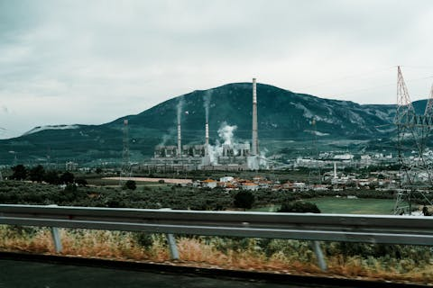
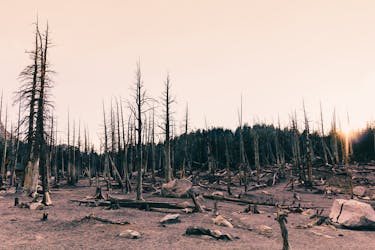
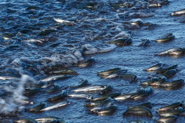
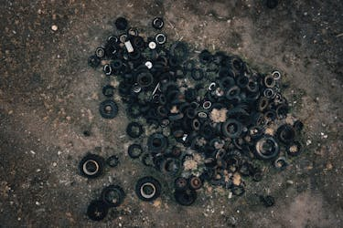

გლობალური დათბობა და კლიმატის ცვლილება ჩვენი დროის ერთ-ერთი ყველაზე
მნიშვნელოვანი გამოწვევაა. გლობალური დათბობა გულისხმობს დედამიწის
ატმოსფეროსა და ოკეანეების საშუალო ტემპერატურის ზრდას, რაც ძირითადად
გამოწვეულია ადამიანის საქმიანობით, მათ შორის წიაღისეული საწვავის
(ნავთობი, ქვანახშირი, ბუნებრივი აირი) წვით, სოფლის მეურნეობითა და
ტყის გაჩეხვით. ამ პროცესის მთავარი მიზეზი არის სათბურის ეფექტი,
რომელიც წარმოიშობა ატმოსფეროში ნახშირორჟანგის (CO₂), მეთანის (CH₄)
და აზოტის ოქსიდის (N₂O) დონის მატებით. ეს აირები აფერხებს სითბოს
გაფრქვევას კოსმოსში და ქმნის „სათბურის გარსს“, რომელიც აჩქარებს
ტემპერატურის ზრდას. კლიმატის ცვლილება კი გლობალური დათბობის შედეგად
გაჩენილი ფართომასშტაბიანი ცვლილებებია, რაც მოიცავს უფრო ხშირ
ქარიშხლებს, გვალვებს, წყალდიდობებს, ზღვის დონის მატებას და ბუნებრივი
ეკოსისტემების დეგრადაციას.
გარემოს დაბინძურება
გარემოს დაბინძურება თანამედროვე მსოფლიოს ერთ-ერთი ყველაზე მწვავე
პრობლემა არის. ის გულისხმობს ნარჩენების, მავნე ნივთიერებებისა და
სხვა დამაბინძურებლების მოხვედრას ჰაერში, წყალში და ნიადაგში, რაც
ზიანს აყენებს როგორც ბუნებრივ ეკოსისტემებს, ასევე ადამიანთა
ჯანმრთელობას. დაბინძურების ძირითადი წყაროებია ინდუსტრიული წარმოება,
ტრანსპორტი, სოფლის მეურნეობა და მოსახლეობის მიერ წარმოქმნილი
ნარჩენები. მაგალითად, ჰაერის დაბინძურებას იწვევს ქარხნების მიერ
გამოყოფილი ტოქსიკური აირები და ავტომობილების გამონაბოლქვი. წყლის
დაბინძურება კი ხდება პლასტმასის ნარჩენებით, ქიმიური ნივთიერებებით და
საკანალიზაციო სისტემების არასათანადო მართვით. ამ პრობლემის შედეგები
მოიცავს კლიმატის ცვლილებას, ცხოველთა სახეობების გადაშენებას, წყლისა
და საკვების ნაკლებობას და სერიოზულ დაავადებებს ადამიანებში.


დეფორესტაცია (ტყეების გაჩეხვა)
ტყეების მასიური გაჩეხვა იწვევს ბიომრავალფეროვნების დაკარგვას,
ნიადაგის ეროზიას და CO₂-თან ბრძოლაში ბუნების უნარის შემცირებას.

ბიომრავალფეროვნების დაკარგვა
ცხოველებისა და მცენარეების სახეობები ქრებიან არალეგალური
მონადირებისა და მათი საცხოვრებელი პირობების განადგურების გამო.

ნარჩენების გადაჭარბებული რაოდენობა
პლასტმასის ნარჩენები დედამიწის ეკოსისტემას მძიმე ზიანს აყენებს. ეს
განსაკუთრებით ეხება ოკეანეებს, სადაც ე.წ. "პლასტმასის კუნძულები"
იქმნება.
წყლის რესურსების დეფიციტი
მოსახლეობის ზრდისა და არასაკმარისი წყლის მართვის შედეგად ბევრ
რეგიონში ტკბილი წყლის დეფიციტი მწვავე პრობლემაა.
ენერგიის არაეფექტური გამოყენება
ენერგიის არარაციონალური მოხმარება ზრდის წიაღისეული საწვავის
გამოყენებას, რაც კლიმატზე ნეგატიურად აისახება.
ნედლეულის ამოწურვა
ბუნებრივი რესურსების გადაჭარბებული მოხმარება იწვევს სასარგებლო
წიაღისეულისა და სხვა მასალების დეფიციტს.